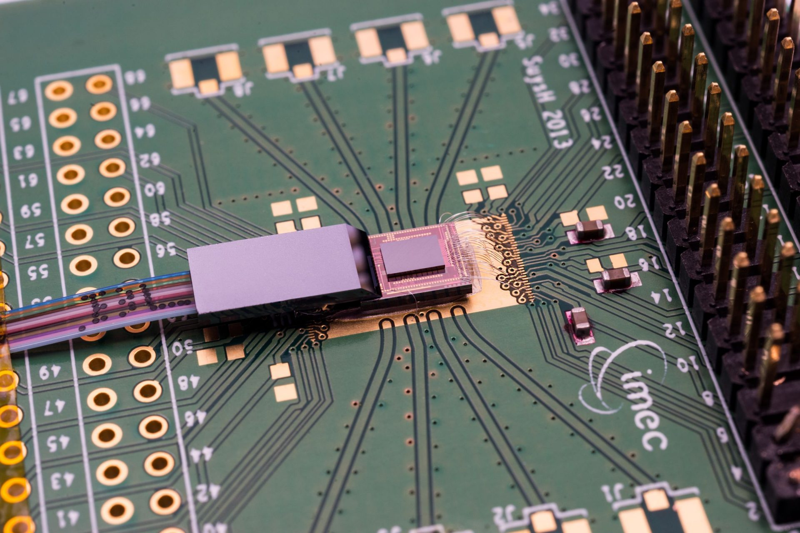
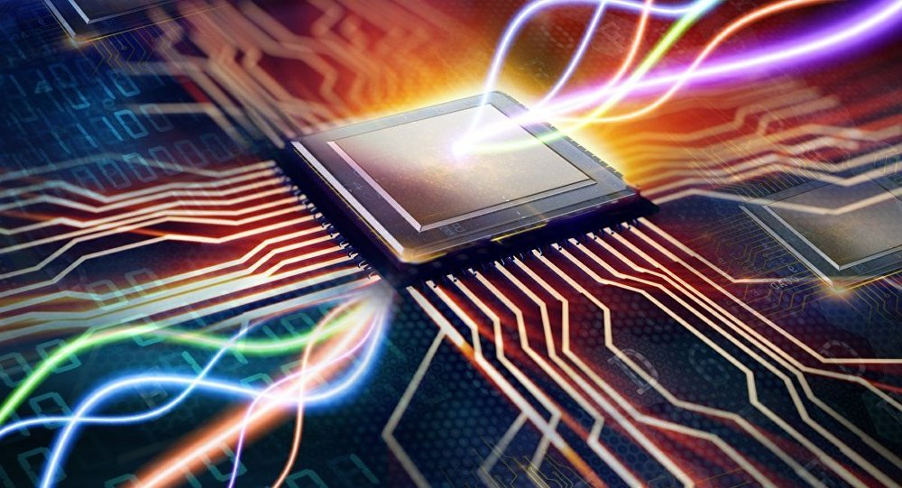

Оптический компьютер
Оптический компьютер-это программно управляемое устройство для обработки,хранения и передачи информации, в котором основным носителем информации является оптическое излучение.
Если сравнивать с электрическими сигналами оптическое излучение имеет ряд преимуществ благодаря следующим свойствам:
1) пропускная способность информационного канала, обусловленная частотой оптического излучения (1012–1016 Гц), может составлять сотни Тбит/с;
2) передача информации происходит со скоростью света;
3) в линейной среде световые пучки распространяются независимо друг от друга;
4) информацию можно кодировать посредством частотных, фазовых, амплитудных, поляризационных и временных переменных электрического поля световой волны;
5) световые поля могут быть двумерными (изображения) или трёхмерными (голограммы);
6) нечувствительность к электромагнитным помехам.
Принцип работы
Принцип считывания информации с оптического диска заключается в облучении поверхности диска лазерным лучом и снятии информации при помощи отраженного от поверхности диска света.
В будущем, по всей видимости, оптическая память вытеснит магнитную, используемую в классических компьютерах.
В блок связи и передачи информации используется хорошо известное всем оптическое волокно.
Передача информации по оптическому волокну заключается в распространении по нему света.
Свет не только обладает возможностью передачи информации со скоростью, на порядок превосходящей скорость передачи электрического сигнала, но и объем информации, переданный при помощи света за единицу времени, тоже больше.
Построение оптических процессоров на основе традиционных принципов вычисления встретило большие трудности.
Создание оптических компьютеров особого труда не составит.
Преимущество оптики
Преимущества оптического компьютера заключаются в том, что информация представлена в виде фотонов, сгенерированных лазерами или диодами.
Если использовать фотоны, то достижение высокоскоростной передачи информации обеспечено.
Для использования дополнительных возможностей, чтобы обеспечивать ввод и вывод данных, можно задействовать третье измерение.

Перспективы
По словам разработчиков, они не ждут, что новая технология вытеснит классические электронные компоненты из компьютеров.
Однако оптические соединения можно использовать для обмена информацией между CPU и памятью — скорость передачи данных будет в тысячу раз выше.
Для этих целей инженеры уже разрабатывают встраиваемый в микросхемы нанолазер.
В перспективе «светящийся кремний» поспособствует развитию приложений, обрабатывающих большие объёмы данных — например, в машинном обучении.
Пользу извлекут и дата-центры, они смогут снизить нагрузку на системы охлаждения, на которые приходится порядка 30–40% потребляемой ЦОД электроэнергии.
ВВЕРХ